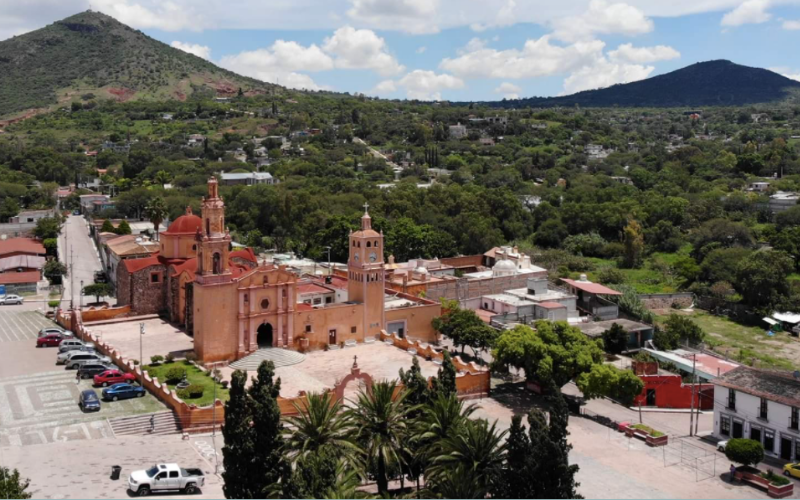
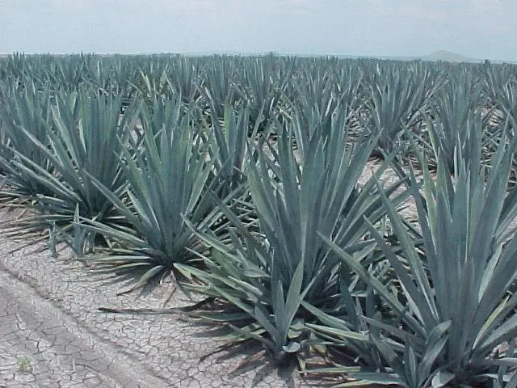
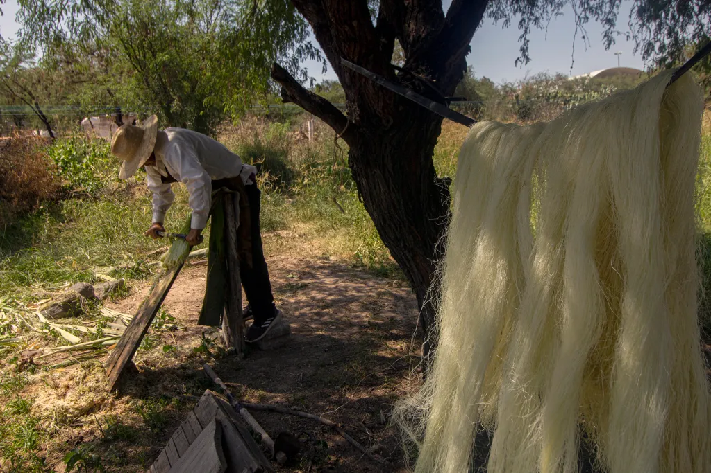
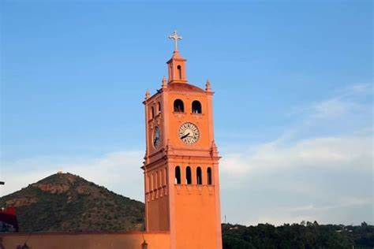
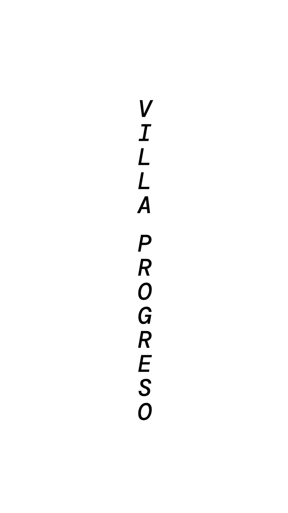
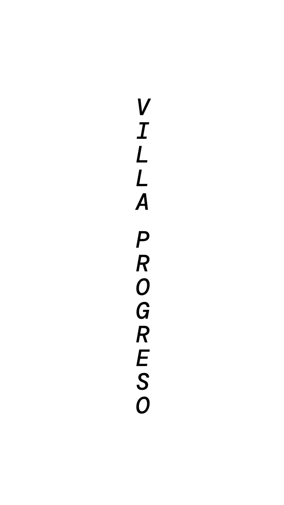

Villa Progreso o San Miguel de las Tetillas como era nombrado, es
una población que se encuentra localizada a 7 Km. de la cabecera
municipal de Ezequiel Montes y a 67 km. de la capital del estado de
Queretaro.


El maguey el ixtle y el pulque, cultura de nuestros antepasados otomíes
El ixtle o istle es una fibra vegetal que se obtiene de las pencas de ciertos magueyes como el agave ixtli y se usa para la fabricación artesanal de prendas, ayates, mecates, etc.

Actividades laborales
En lo que respecta a las actividades laborales de la población otomí, el trabajo fue dividido entre hombres y mujeres. La actividad de los hombres fue casi siempre la agricultura, en siembra temporal, en algunas regiones cercana a la laguna se practico el riego por medio de canales aunque con redes y salabre, y la fabricación de esteras en zonas adecuadas para ello.

Lugares de turismo y de recreación
En Villa Progreso puede visitar diferentes sitios turísticos como los siguientes…


 
